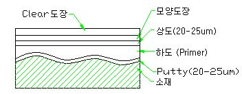

도막의 구조 및 공정
|
도막의 구조 |
 |
|
1. 세 척 |
· 도장時 먼지는 신뢰성에 치명적인 장애 |
|
2. putty 작업 |
· 홈, 요철部를 메꿔주는 평활성 작업 · 통상 Frame 용접部에만 적용 |
|
3. 사 상 |
· Putty작업이 이루어진 곳을 Sand-Paper로 사상 · Burr 제거 |
|
4. 하 도 (Primer 도장) |
· Primer : 방청효과 및 밀착성이 우수한 하도용 도료 · 색깔 : 적색, 회색 · 소재에 화성처리 피막이 형성되어 있을 경우 ⇒ 하지도장을 하지 않는다. |
|
5. 상 도 |
· 착색도장층(외관) · 수분, 습기의 침입을 막는다. · 도료의 원료 및 용도에 따라 여러가지 종류가 있음. |
|
6. 건 조 |
· 종류 : · 자연건조 · 소부건조(열풍건조) : 일반적인 건조방식 · 건조방식은 도료의 종류(원료)에 따라 채택 · 소부건조:가마內에 120°∼150°의 열풍을 대류시켜 건조하는 방식 |
|
7. 모양도장 (option) |
· 기본적인 도장 후 외관에 무늬를 내기위한 도장 · 모양도장 후 다시 건조시킨다 · 종전까지는 상도도막을 도착후 건조하고, 그 위에 다시 모양도장을 하였으나 요즘은 한꺼번에 도착, 건조시킨다. (모양도장用 상도도장 도료가 따로 있음) |
|
8. clear 도장 (option) |
· 도막의 제일 상층에 투명도막을 형성 ※ 용도 ① 상도, 모양도장의 도막을 보호 ② 미려한 외관 ex) 자동차 외장用 |